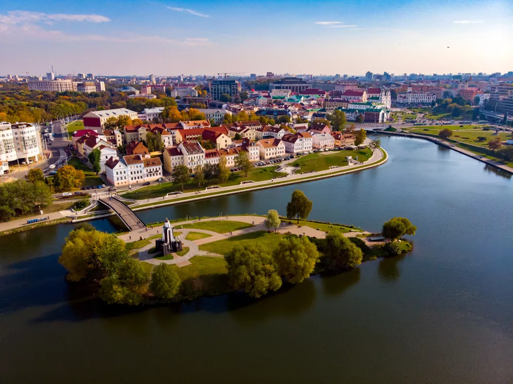
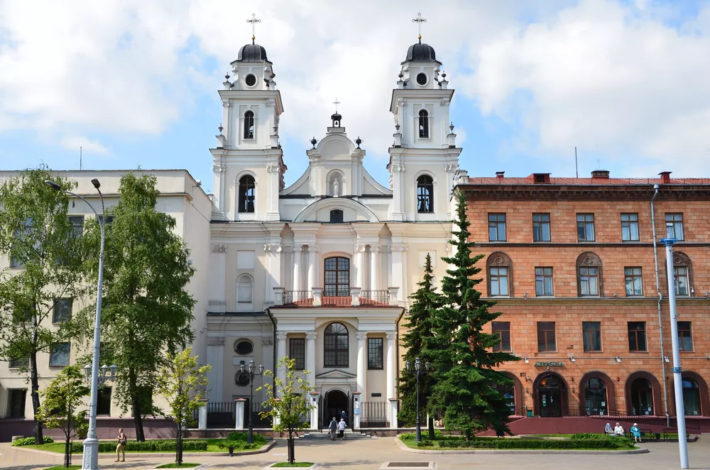
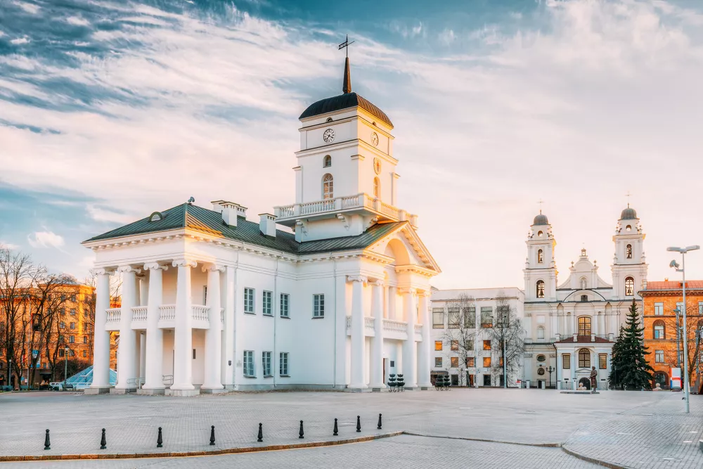
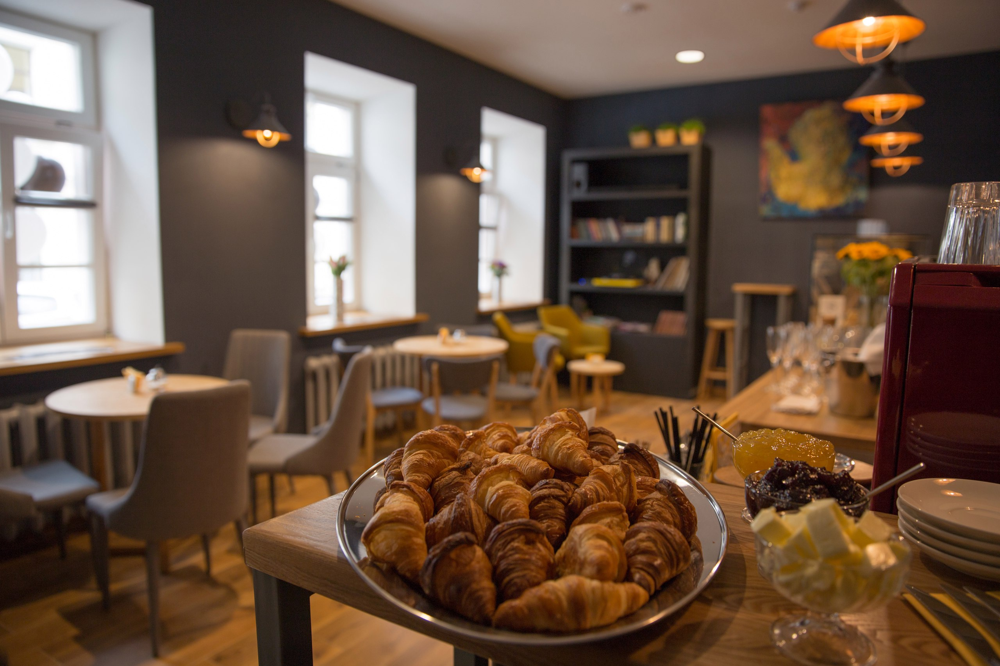
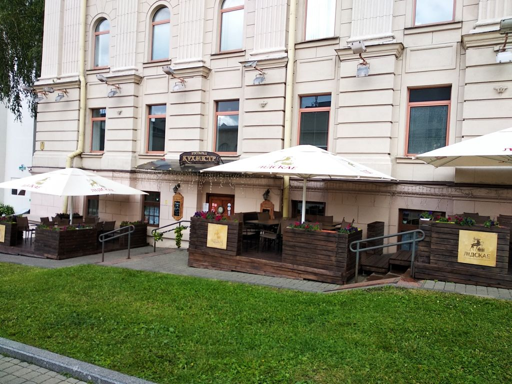
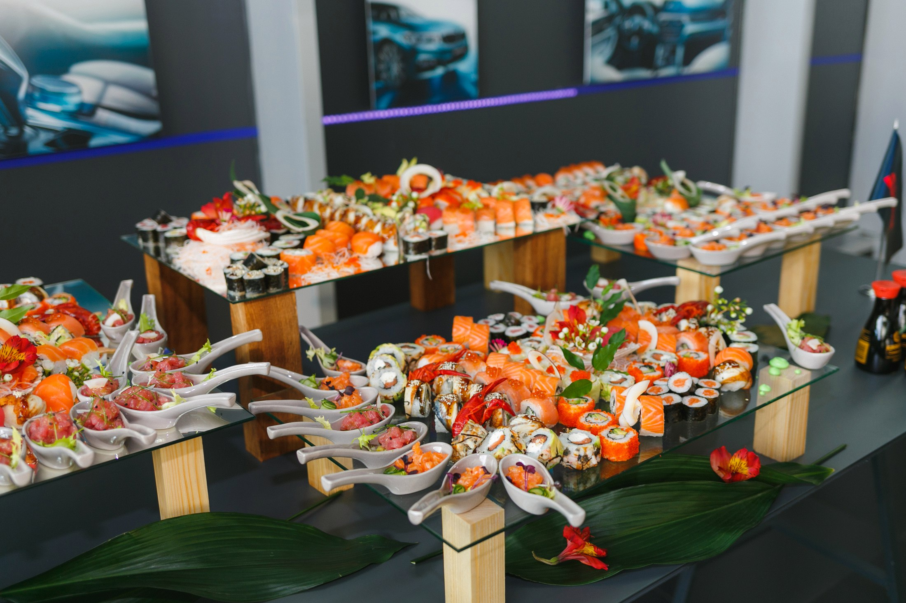

Минск-столица Беларуси
Минск — столица и крупнейший город Белоруссии, административный центр Минской области и Минского района, в состав которых не входит, поскольку является самостоятельной административно-территориальной единицей с особым (столичным) статусом. Крупнейший транспортный узел, политический, экономический, культурный и научный центр страны. Является ядром Минской агломерации. Десятый по численности населения (без учёта пригородов) город в Европе, седьмой — после Москвы, Санкт-Петербурга, Ташкента, Киева, Алма-Аты и Баку на территории бывшего СССР. Город расположен недалеко от географического центра страны и стоит на реке Свислочь.
Город впервые упоминается в «Повести временных лет» во время Битвы на реке Немиге под 1067 годом. В дальнейшем город перешёл в состав Речи Посполитой и Российской империи, где стал губернским городом. В СССР был столицей Белорусской Советской Социалистической Республики, а с 1991 года — столицей независимой Белоруссии.
Добро пожаловать в Минск!
| Город | Минск |
| Население | 1 992 862 человека |
| Площадь | 348,84 км² |
Достопримечательности Минска
Остров Мужества и Скорби
Остров Мужества и Скорби (его еще называют Островом слез) — это небольшой искусственный остров на реке Свислочь в центре Старого Минска, около Троицкого предместья. Это красивое место, полное печали и скорби.
Здесь стоит мемориал, который построили в память о погибших в Афганской войне в 1979-1989 годах. С берегом этот искусственный остров соединен Горбатым мостом. На острове стоит часовня, на ее стенах написаны имена всех павших в Афганистане жителей Беларуси. Внутри часовни лежит капсула со списком всех погибших, обращение к будущим поколениям и афганская земля, которую привезли сюда матери погибших солдат. Недалеко от часовни расположена скульптура ангела, который, закрыв лицо руками, оплакивает всех, кто пострадал от этой войны. На острове лежат булыжники, каждый из которых символизирует один город, где шли бои.
Собор Пресвятой Девы Марии
Напротив ратуши, на одной площади с православным Свято-Духовым собором, расположен и главный храм местных католиков — кафедральный собор Пресвятой Девы Марии. Он возведен в 1700-1710 годах в стиле белорусского барокко и изначально был церковью иезуитов.
В 1798 году в Беларуси была создана католическая епархия, тогда церковь освятили в честь Святой Девы Марии и присвоили ей статус католического кафедрального собора. При советской власти Мариинский костел закрыли, обе башни снесли. Здание превратили в спортивный комплекс: под церковными сводами проходили занятия по тхэквондо. Только в начале 1990-х храм вернули католической церкви, повторно освятили и полностью восстановили. В собор стоит зайти, чтобы послушать звучание органа, а также посмотреть на старинные фрески на потолке, найденные в ходе реставрации.
Минская ратуша

Еще одна достопримечательность площади Свободы — городская ратуша. Ее построили после того, как польский король и князь Великого княжества Литовского Александр одарил минчан Магдебургским правом. Жалованная грамота позволяла городу учредить собственный орган самоуправления (магистрат) и возвести для него ратушу. Минчане получили право на частное владение землей, возможность платить единый налог и создавать ремесленные объединения — цеха.
После присоединения белорусских земель к России Магдебургское право в Минске было отменено. В бывшей ратуше размещались суд, архив, музыкальная школа и театр. В 1857 году здание снесли. По одним источникам — из-за обветшалости, по другим — по приказу Николая I, чтобы она не напоминала жителям о прежней свободе.
Новую ратушу возвели в 2003 году на месте и по образу прежнего здания 17 века. На первом этаже сейчас проходят выставки, посвященные истории ратуши и Магдебургскому праву. Здесь можно увидеть макет исторического центра Минска в начале 19 века. На втором этаже проводятся совещания и приемы важных гостей.
Башню ратуши украшают герб города и часы. Каждый час куранты отбивают припев из песни про Минск, написанной почетным гражданином столицы, известным белорусским композитором Игорем Лученком.
Лучшие заведения
Stories
Stories — кофейня, расположенная в самом сердце Минска. Девиз заведения: «Круассаны — и только!». Это идеальный вариант для тех, кто любит завтракать не спеша, в уютной атмосфере.
В Stories вам предложат чашку кофе на любой выбор (латте, американо, капучино, эспрессо и т. д.), чёрный или зелёный чай, японский чай Матча, смузи, апельсиновый фреш, из алкогольных напитков — вино или глинтвейн. Здесь можно попробовать вкусные домашние сэндвичи, круассаны, чиабатту. До 13:00 можно заказать завтрак на выбор, из представленных в меню.
Кухмистр
«Кухмистр» — ресторан белорусской и литвинской кухни. Заведение открылось в 2011 году и успело получить множество наград за профессиональное мастерство и стабильную работу.
В «Кухмистре» есть несколько различных вариантов меню: основное, детское, банкетное, навынос и др. Создатели ресторана вдохновляются традиционной крестьянской кухней.
В меню представлены холодные и горячие закуски (сёмга домашнего посола, сельдь «под шубой», тартар из говядины и др.), салаты, супы (борщ с пампушками, солянка и т. п.), блюда из картофеля, говядины, свинины, баранины, курицы и рыбы, вареники, гарниры, десерты.
Ronin
Ronin — ресторан японской кухни. В меню заведения представлен широкий ассортимент роллов, суши, сашими, сеты (в том числе и детские), супы (холодный томатный рамен с овощами, карри, мисо и др.), салаты (с лососем, с говядиной и т. д.), закуски (гёдза, тирадито, поке), десерты (морковный пирог, ролл с тропическими фруктами и т. д.), напитки.